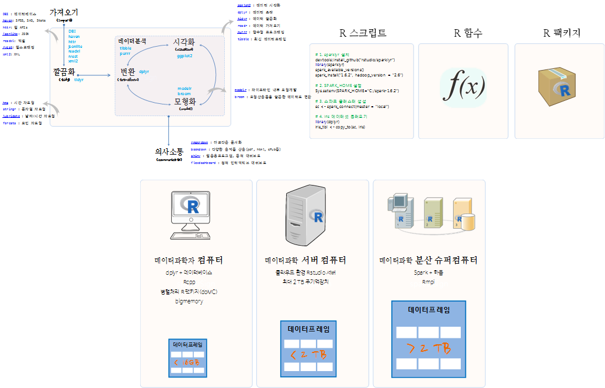
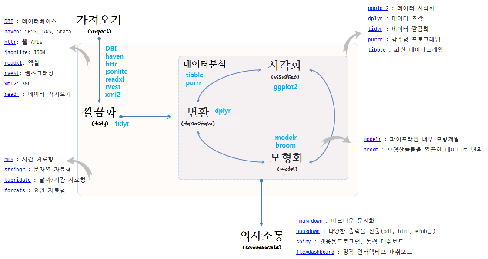
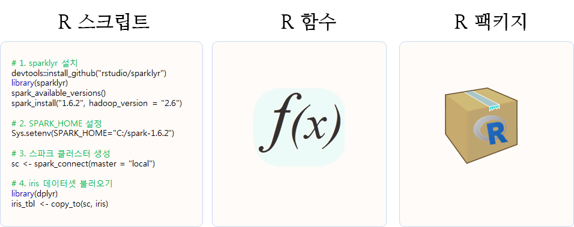
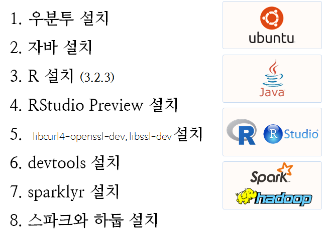

데이터 과학
빅데이터 - tidyverse 스파크
학습 목표
- 빅데이터 문제를 정의하고, 빅데이터 문제에 대한 해결책을 살펴본다.
- 기계 중심 대용량의 빅데이터 문제를 스파크로 접근한다.
- 대용량 빅데이터를
tidyverse툴체인, 스파크, 함수형 프로그래밍으로 해결한다.
1. 기계중심 빅데이터 문제 정의 및 처리 전략
| 구분 | 데이터 크기 |
|---|---|
| 매우 큰 데이터 | 컴퓨터 한대 메모리에 저장될 수 없는 크기 : 5 TB이상 |
| 중간 데이터 | 서버 컴퓨터 메모리에 저장할 수 있는 크기 : 10 GB – 5 TB |
| 작은 데이터 | 노트북 컴퓨터 메모리에 저장할 수 있는 크기 : 10 GB 이하 |
전통적으로 R은 작은 데이터를 빠르게 탐색하는데 최적의 환경을 제공한다. 중간크기 데이터를 작업하지 못할 기술적인 이유는 없지만, 거의 작업이 이뤄지지 않고 있다.
- 빅데이터 처리 전략
- 빅데이터 문제 소규모 분석방법(Big Data-Small Analytics) : 요약/표본추출/부분집합 추출 (90%)
sparklyr혹은SparkR은 필요없다.
- 병렬처리가 가능한 문제: 작은 데이터 문제로 쪼개서 분할 정복 (9%)
sparklyr혹은SparkR을 사용해도 되지만, 공유메모리 병렬프로그램parallel,foreach혹은 메시지 전달 분산 병렬컴퓨팅Rmpi도 대안이 된다.
- 빅데이터 문제 대규모 분석방법(Big Data-Large Scale Analytics): 더이상 어찌할 수 없는 큰 문제 데이터 (1%)
sparklyr혹은SparkR이 이런 문제에는 적합하다. 특히, 추천시스템을 개발하는 경우 필요한데 이유는 매우 크고 성긴 행렬에서 패턴을 찾아 내는 모형이 개발되기 때문이다.
- 빅데이터 문제 소규모 분석방법(Big Data-Small Analytics) : 요약/표본추출/부분집합 추출 (90%)
빅데이터로 컴퓨터 한대 메모리에 적재가 되지 않는 경우 SparkR을 사용해서 여러 컴퓨터에 분산해서 R로 작업한다.
2. tidyverse 스파크 데이터 과학 개요.
크기, 다양성, 속도로 특징되는 빅데이터를 데이터과학 기반으로 탐색적 데이터분석, 통계가설검정, 예측모형, 기계학습 등 다양한 방법론을 적용하기 위해서는 다음과 같은 tidyverse 스파크 틀(framework)이 요구되고 있다.

2.1. 하드웨어와 데이터
분석할 데이터 혹은 모형을 개발할 데이터 크기를 기준으로 데이터 과학을 위한 하드웨어 환경을 살펴보면 다음과 같다.
- 16 GB 미만의 노트북 혹은 데스크톱 컴퓨터에서
dplyr+ RDBMS를 설치해서 멀티코어 CPU를 활용하여 병렬 컴퓨팅을 실행하는 것이 가장 작은 규모의 빅데이터 혹은 스몰데이터를 처리하는 방식이다. - 2 TB까지 크기를 갖는 데이터를 처리하는데 클라우드 환경에 2TB 주기억장치를 갖는 가상컴퓨터를 생성하여 분석하는 것도 가능한 방법이다.
- 2 TB이상 크기를 갖는 데이터를 처리하는데 스파크+하둡 클러스터를 구축하여 분산처리하는 방식이 가장 많이 사용되는 최근의 추세다.

2.2. R 팩키지 도구상자 – tidyverse
데이터를 담아 적절히 분석할 수 있는 하드웨어 환경이 갖춰지면, 데이터에서 정보를 추출하여 자동화할 수 있는 일반적인 모형을 개발할 적절한 R 팩키지 도구상자가 필요하다. 이를 과거에 hadleyverse, 현재는 tidyverse라고 부른다.
- 데이터 가져오기
- readr : 데이터 가져오기
- DBI : 데이터베이스
- haven: SPSS, SAS, Stata
- httr: 웹 APIs
- jsonlite: JSON
- readxl: 엑셀
- rvest: 웹스크래핑
- xml2: XML
- readr : 데이터 가져오기
- 데이터 정제
- tidyr : 데이터 깔끔화
- dplyr : 데이터 조작
- ggplot2 : 데이터 시각화
- ggvis: 인터랙티브 시각화
- purrr : 함수형 프로그래밍
- 데이터 자료형
- tibble : 최신 데이터프레임
- hms : 시간 자료형
- stringr : 문자열 자료형
- lubridate : 날짜/시간 자료형
- forcats : 요인 자료형
- 모형
- modelr : 파이프라인 내부 모형개발
- broom : 모형산출물을 깔끔한 데이터로 변환
- 의사소통
- rmakrdown : 마크다운 문서화
- bookdown : 다양한 출력물 산출(pdf, html, ePub등)
- flexdashboard : 정적 인터랙티브 대쉬보드
- shiny : 웹응용프로그램, 동적 대쉬보드

2.3. R 코드
처음에는 탐색적 자료분석과 임의 데이터 분석으로 R 스크립트가 생성된다. 작업이 지속적으로 반복되거나, 4번이상 반복되는 것이 느껴질 때 함수를 작성할 시점이 되었다. 특정 작업에 지속적으로 함수가 늘어나고, 이를 조합하여 좀더 복잡한 문제를 해결할 필요성이 느껴질 때가 팩키지를 작성할 시점이 된 것이다. R 팩키지는 함수에 대한 단위테스트(testthat)와 함수 도움말과 가장 중요한 함수가 포함되어 있다. 물론 어떤 R 팩키지도 독립적으로 존재하지 않기 때문에, 네임스페이스를 통해 팩키지에 대한 의존성 정보도 함께 포함되게 된다.

3. R 스파크 클러스터 설치
진정한 분산처리를 위해서 클라우드나 자체 IDC 내부에 설치해야 맞다. 하지만, 멀티코어와 충분한 주기억장치를 갖는 노트북이나 데스크탑 PC를 보유한 경우 직접 스파크 클러스터를 설치하는 것도 좋다.
- 우분투 설치
- 자바 설치
- R 설치 (3.2.3)
- RStudio Preview 설치
libcurl4-openssl-dev,libssl-dev설치:devtools의존성- devtools 설치
- sparklyr 설치
- 스파크와 하둡 설치

데이터과학에서 재현성이 무척이나 중요한 요소다. 우분투 16.04. 이미지를 기반으로 R 스파크 클러스터를 생성한다. 우분투 16.04 LTS 버젼을 기반으로 설치를 한 뒤에 자바를 설치한다. 우분투 터미널을 열고 다음과 같은 순서대로 openjdk를 설치한다.
$ sudo add-apt-repository ppa:openjdk-r/ppa
$ sudo apt-get update
$ sudo apt-get install -y openjdk-8-jdkR을 설치한 뒤에 RStudio Preview를 설치하면, 스파크와 하둡 설치에 필요한 사항을 상당부분 자동으로 알아서 해준다.
sparklyr을 설치하기 위해서는 devtools가 필요하고, devtools가 잘 설치되기 위해서는 libcurl4-openssl-dev, libssl-dev을 배쉬쉘에서 설치해야 된다.
$ sudo apt-get install libcurl4-openssl-dev libssl-dev이런 과정을 거치게 되면 RStudio 통합개발환경을 띄울 준비가 되었다. 이제 RStudio 화면에서 다음과 같은 명령어를 순차적으로 실행한다.
install.packages("devtools", dependencies = TRUE)
devtools::install_github("hadley/devtools") # 최신 버젼을 원하는 경우
# 1. sparklyr 설치
devtools::install_github("rstudio/sparklyr")
library(sparklyr)
spark_available_versions()
spark_install(version = "1.6.2", hadoop_version = "2.6")
# 2. 스파크 클러스터 생성
library(dplyr)
sc <- spark_connect(master = "local")
# 3. iris 데이터셋 불러오기ibrary(dplyr)
iris_tbl <- copy_to(sc, iris)sc 스파크 컨텍스트가 생성되면 iris R 데이터프레임을 copy_to 명령어로 스파크 데이터프레임 iris_tbl로 생성하면 스파크 클러스터에서 데이터를 분석할 준비를 마치게 된다.